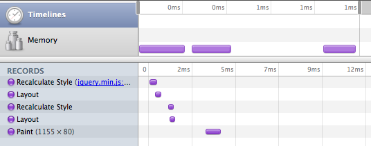

Todo
- CSS3
- Document Fragments?
- Talk about the event loop
- Talk about the Chrome Screen shot after 500ms
- Always add Raw JS?
- Link to ressource about jQuery selector optimization
- Finish tools section
- Add link to http://zetafleet.com/blog/google-chromes-heap-profiler-and-memory-timeline
Introduction
HTML5 gives us great tools to enhance the visual appearance of web applications. This is especially true in the realm of animations. However, with this new power also come new challenges. Actually these challenges aren’t really that new and it might sometimes make sense to ask your friendly desk neighbor, the Flash programmer, how she has overcome similar things in the past.
Anyway, when you work in animation it becomes hugely important that users perceive these animations to be smooth. What we need to realize is that smoothness in animations can’t really be created by simply increasing the frames per second beyond any cognitive threshold. Our brain is, unfortunately, smarter than that. What you will learn is that true 30 frames of animation per second (fps) is much better than 60 fps with just a few frames dropped in the middle. People hate jaggedness.
This article will try to give you the tools and techniques to work on improving the experience of your own application.
The Strategy
By no means do we want to discourage you from building awesome, stunningly visual apps with HTML5.
Then when you notice that performance could be a little better, come back here and read up on how you can improve the elements of your application. It can, of course, help to do some things right in the first place but never let that get in your way of being productive.
Visual fidelity++ with HTML5
Hardware Acceleration
Hardware acceleration is an important milestone for overall render performance in the browser. The general scheme is to offload tasks that would otherwise be calculated by the main CPU to the graphics processing unit (GPU) in your computer’s graphics adapter. This can yield massive performance gains and can also reduce resource consumption on mobile devices.
These aspects of your document can be accelerated by the GPU:
- General layout compositing
- CSS3 transitions
- CSS3 3D transforms
- Canvas Drawing
- WebGL 3D Drawing
While acceleration of canvas and WebGL are special purpose features that might not apply to your specific application the first three aspects can help pretty much every app to become faster.
What can be accelerated?
GPU acceleration works by offloading well-defined and specific tasks to special purpose hardware. The general scheme is that your document is broken down into multiple “layers” which are invariant to the aspects of your page that are accelerated. These layers are rendered using the traditional render pipeline. The GPU is then used to composite the layers onto a single page applying the “effects” that can be accelerated on the fly. A possible outcome is that an object that is animated on the screen does not require a single “relayout” of the page while the animation happens.
What you need to take away from that is that you need to make it easy for the rendering engine to identify when it can apply it’s GPU acceleration magic. Consider the following example:
You want to animate an element in the browser from left to right. The traditional approach to is to set a JavaScript timer and then repeatedly setting the “left” property of the style object every N milliseconds.[a]
While this works, the browser doesn’t really know that you are performing something that is supposed to be perceived as smooth animation by a human being. Consider what happens when you achieve the same visual appearance using CSS3 transitions instead:
Now, you simply define the final position of the object and then tell the browser to perform an animation to the final destination over a certain period of time.[b]
How the browser implements this animation is completely hidden from the developer. This in turn means that the browser is able to apply tricks such as GPU acceleration to achieve the defined goal.
The magic CSS bullet
Currently most browsers only use GPU acceleration when they have a strong indication that an HTML element would benefit from it. The strongest indication is that a 3D transformation was applied to it. Now you might not really want to apply a 3D transformation, but still gain the benefits from GPU acceleration – no problem. Simply apply the identity transformation:
-webkit-transform: translateZ(0);[c]
Please be warned that this applying this transformation does not guarantee to help your performance. It might simply crank up your GPU, use up more battery but deliver the same performance as before. So be careful with this technique and only use it if you experience a true performance win.
When you think about which element to apply the transformation, go for those that represent a good logical chunk of your page. Ideally this is the element that you are animating and it doesn’t contain other elements that you move around.
There are two useful command-line flags for Chrome to help debugging GPU acceleration:
-
--show-composited-layer-bordersshows a red border around elements that are being manipulated at the GPU level. Good for confirming your manipulations occur within the GPU layer -
--show-paint-rectsall non-GPU changes are painted and this throws a light border around all areas that are repainted. You can see the browser optimizing paint areas in action
Safari has similar runtime flags described here.
CSS3 Transitions
CSS Transitions make style animation trivial for everyone, but they also are a smart performance feature. Because a CSS transition is managed by the browser, the fidelity of its animation can be greatly improved, and in my cases hardware accelerated. Currently Webkit (Chrome, Safari, iOS) have hardware acellerated css transforms, but its coming quickly to other browsers and platforms.
You can use "transitionEnd" events in order to script this into powerful combinations, though right now, capturing all supported transition end events means watching "webkitTransitionEnd transitionend oTransitionEnd".
Many libraries have now introduced animation APIs that leverage transitions if present and fall back to standard DOM style animation otherwise. scripty2, yui transition, jquery enhanced animate
CSS3 Translate
I'm sure you've found yourself animating the x/y position of an element across the page before. You probably manipulated the inline style's left and top properties. With 2D transforms, we can use the translate() functionality to replicate this behavior.
We can combo this with DOM animation to use the best thing possible
<div style="width:100px; height: 200px; background:red;
position:absolute; left: 20px; top: 30px; z-index: 100" id="box"></div>
<script>
document.querySelector('#box').addEventListener('click', moveIt, false);
function moveIt(evt){
var elem = evt.target;
if (Modernizr.csstransitions){
elem.style.transition 'left 3s ease-out';
elem.style.left = '700px';
} else {
jQuery(elem).animate({ 'left': '700px'}, 3000, 'easeOut');
}
}
</script>
requestAnimationFrame
use it.
Profiling
When you discover that the speed of your application can be improved, it is time to dig into profiling to find out where optimizations could yield the greatest benefit. Optimizations will often have negative impact on the maintainability of your source code and should thus only be applied if necessary. Profiling tells you which parts of your code would yield the greatest benefits when their performance would be improved.
JavaScript Profiling[d]
JavaScript profilers give you an overview on the performance of your application on the JavaScript function level by measuring the time it takes to execute each individual function from its starts to its end.
The gross execution time of a function is the overall time it takes to execute it from top to bottom. The next execution time is the gross execution time minus the time it took to execute functions called from the function.
Some functions get called more often than others. Profilers usually give you the time it took for all invocations to run as well as the average and minimum and maximum execution time.[e]
The DOM
The performance of JavaScript has a strong influence in to how fluid and responsive your application will feel. It is important to understand that, while JavaScript profilers measure the execution time of your JavaScript, they also indirectly measure time which is spend in doing DOM operations. These DOM operations are often at the heart of your performance issues.
function drawArray(array) {
for(var i = 0; i < array.length; i++) {
document.getElementById(‘test’).innerHTML += array[i]
}
}
E.g. in the code above almost no time is spend doing actual JavaScript. It is still very likely that the drawArray-function will show up in your profiles because it is interacting with the DOM in a very wasteful fashion.
Tips and Tricks
Anonymous Functions
Anonymous functions are not easy to profile because they inherently don’t have a name under which they could show up in the profiler. There are two ways to work around this:
$(‘.stuff’).each(function() { ... });
rewrite to:
$(‘.stuff’).each(function workOnStuff() { ... });[f]
It is not commonly known that JavaScript supports naming function expressions. Doing this will make them show up perfectly in the profiler. There is one problem with this solution: The named expression actually puts the function name into the current lexical scope. This might clobber other symbols, so be careful.
WebKit based browsers also support the following way to name a function:
var fn = function() { ... };
$(‘.stuff’).each(fn);
fn.displayName = ‘workOnStuff’;
Unfortunately this does not work in Firebug.
Named Self Calling Functions
Imagine you have a long function and you suspect that a small part of it might be the reason for your performance problems. There are two ways to find out which part is the problem:
- The correct method: Refactor your code to not include any long functions.
-
The evil getting-things-done method[g]: add statements in the form of named self calling functions to your code. If you are a little careful this does not change the semantics and it makes parts of your function show up as individual functions in the profiler:function myLongFunction() {
…
(function doAPartOfTheWork() {
...
})();
…
}Don’t forget to remove these extra functions after profiling is done; or even use them as a starting point to refactor your code.
DOM Profiling[h]
The latest Chrome Web Inspector development tools contain the new “Timeline View” which shows a timeline of the low level actions performed by the browser. You can use this information to optimize your DOM operations. You should aim to reduce the number of “actions” the browser has to perform while your code executes.
The timeline view can create an immense amount of information. You should thus try to create minimal test cases that you can execute independently.

The image above shows the output of the timeline view for a very simple script. The left pane shows the operations performed by the browser in chronical order, while the timeline in the right pane shows the actual time consumed by an individual operation.
More info on the timeline view. An alternative tool for profiling in Internet Explorer is DynaTrace Ajax Edition.
Profiling Strategies
Single out aspects
When you want to profile your application, try to single out the aspects of its functionality that might trigger slowness as close as possible. Then try to do a profile run that only executes parts of your code that are relevant to these aspects of your application. This will make the profiling data easier to interpret because it is not intermixed with code paths that are not related to your actual problem. Good examples for individual aspects of your application might be:
- Start up time (activate the profiler, reload application, wait until initialization is complete, stop the profiler.
- Click a button and subsequent animation (start profiler, click button, wait until animation is complete, stop profiler).
Programatic Interface
There is also a programatic interface to activate the debugger. This allows precise control over when profiling starts and when it ends.
Start a profiling with:
console.profile()
Stop profiling with:
console.profileEnd()
GUI Profiling
Executing only the right part of your application can be harder in a GUI program than when you optimize, say, the ray tracer of your 3D engine. When you, for example, want to profile the stuff that happens when you click a button, you might trigger unrelated mouseover events along the way that make your results less conclusive. Try to avoid that :)
Repeatability
When you do profiling make sure you can actually reproduce your results. Only then will you be able to tell whether your optimizations did actually improve things. Also function level profiling is done in the context of your whole computer. It is not an exact science. Individual profile runs might be influenced by many other things happening on your computer:
- An unrelated timer in your own application that fires while you measure something else.
- The garbage collector doing its work.
- Another tab in your browser doing hard work in the same operating thread.
- Another program on your computer using up the CPU thus making your application slower.
- Sudden changes in the gravitational field of the earth.
It also makes sense to execute the same code path multiple times in one profiling session. This way you decrease the influence of above factors and the slow parts may stand out even more clearly.
Measure, improve, measure
When you identified a slow spot in your program, try to think of ways to improve the execution behavior. After you changed your code, profile again. If you are satisfied with the result, move on, if you are not seeing an improvement you should probably roll back your change and not leave it in “because it can’t hurt”.
Optimization Strategies
Minimize DOM interaction
A common theme for improving the speed of web client applications is to minimize DOM interaction. While the speed of JavaScript engines has increased by an order of magnitude, accessing the DOM has not gotten faster at the same rate. This is also for very practical reasons never going to happen (things like layouting and drawing stuff on a screen just take time).
Cache DOM Nodes
Whenever you retrieve a node or a list of nodes from the DOM, try to think about whether you might be able to reuse them in a later computation (or even just the next loop iteration). As long as you don’t actually add or delete nodes in the relevant area, this is often the case.
Before:
function getElements() {
return $('.my-class')
}
After:
var cachedElements;
function getElements() {
if (cachedElements) {
return cachedElements;
}
cachedElements = $('.my-class');
return cachedElements;
}
Cache Attribute Values
The same way you can cache DOM nodes you can also cache the values of attributes. Imagine you are animating an attribute of a node’s style. If you know that you (as in that part of the code) are the only one that will ever touch that attribute you can cache the last value on every iteration so that you will not have to read it repeatedly.
Before:
setInterval(function() {
var ele = $('#element');
var left = parseInt(ele.css('left'), 10);
ele.css('left', (left + 5) + 'px')
}, 1000 / 30);
After:
var ele = $('#element');
var left = parseInt(ele.css('left'), 10);
setInterval(function() {
left += 5;
ele.css('left', left + 'px')
}, 1000 / 30);
Move DOM Manipulation Out of Loops
Loops are often hot points for optimization. Try to think of ways to decouple actual number crunching to working with the DOM. It is often possible to do a calculation and then, after it is done, apply all the results in one go.
Before:
document.getElementById('target').innerHTML = '';
for(var i = 0; i < array.length; i++) {
var val = doSomething(array[i]);
document.getElementById('target').innerHTML += val;
}
After:
var stringBuilder = [];
for(var i = 0; i < array.length; i++) {
var val = doSomething(array[i]);
stringBuilder.push(val);
}
document.getElementById('target').innerHTML = stringBuilder.join('');[j]
Redraws and Reflows
As discussed earlier accessing the DOM is relatively slow. It becomes very slow when your code is reading a value which has to be recalculated because your code recently modified something related in the DOM. Thus it should be avoided to intermix reading and writing access to the DOM. Ideally your code should always be grouped in two phases:
- Phase 1: Read DOM values necessary for your code
- Phase 2: Modify the DOM
Try not to program a pattern such as:
- Phase 1: Read DOM values
- Phase 2: Modify the DOM
- Phase 3: Read some more
- Phase 4: Modify the DOM somewhere else.
Before:
function paintSlow() {
var left1 = $('#thing1').css('left');
$('#otherThing1').css('left', left);
var left2 =[k] $('#thing2').css('left');
$('#otherThing2').css('left', left);
}
After:
function paintFast() {
var left1 = $('#thing1').css('left');
var left2 = $('#thing2').css('left');
$('#otherThing1').css('left', left);
$('#otherThing2').css('left', left);
}
This advice should be considered for actions happening within one JavaScript execution context. (e.g. within an event handler, within an interval handler or when handling an ajax response.)
Executing the function paintSlow() from above creates this image:
Switching to the faster implementation yields this image:

These images show that reordering the way your code accesses the DOM can greatly enhance render performance. In this case the original code has to recalculate styles and layout the page twice to create the same result. Similar optimization can be applied to basically all “real world” code and yield some really dramatic results.
Read more: Rendering: repaint, reflow/relayout, restyle by Stoyan Stefanov
Redraws and the Event Loop
JavaScript execution in the browser follows an “Event Loop” model. By default the browser is in an “idle” state. This state can be interrupted by events from user interactions or such things as JavaScript timers or Ajax callbacks. Whenever a piece of JavaScript runs at such an interruption point, the browser will usually wait for it to finish until it repaints the screen (There might be exceptions for extremely long running JavaScripts or in cases such as alert-boxes which effectively interrupt the JavaScript execution).
Consequences
- If your JavaScript animation cycles take longer than 1/30 seconds to execute, you will not be able to create smooth animations because the browser will not repaint during the JS execution. When you expect to also handle user events you need to be much faster.
-
Sometimes it comes in handy to delay some JavaScript actions until just a little bit later.
E.g.setTimeout(function() { … }, 0)
This effectively tells the browser to execute the callback as soon as the event loop is idle again (effectively some browsers will wait at least 10ms). You need to be aware that this will create two JavaScript execution cycles which are very close together in time. Both might trigger a repaint of the screen which might double the overall time spent with painting. Whether this actually triggers two paints depends on heuristics in the browser.
Regular version:
function paintFast() {
var height1 = $('#thing1').css('height');
var height2 = $('#thing2').css('height');
$('#otherThing1').css('height', '20px');
$('#otherThing2').css('height', '20px');
}
Lets add some delay:
function paintALittleLater() {
var height1 = $('#thing1').css('height');
var height2 = $('#thing2').css('height');
$('#otherThing1').css('height', '20px');
setTimeout(function() {
$('#otherThing2').css('height', '20px');
}, 10)
}

The delayed version shows that the browser paints twice although the two changes to the page are only 1/100 of a second a part.
Lazy Initialization
Users want web apps that load fast and that feel responsive. However, users have different thresholds into what they perceive as slow depending on the action that they do. E.g. an app should never do a lot of computation on a mouseover event because this might create a bad user experience while the user continues to move his mouse. However, users are used to accepting a little delay after they clicked on a button.
Thus it might make sense to move your initialization code to be executed as late as possible (e.g. when the user clicks a button that activates a particular component of your application).
Before:
var things = $('.ele > .other * div.className');
$('#button').click(function() { things.show() });
After:
$('#button').click(function() { $('.ele > .other * div.className').show() });[l]
Event Delegation
Spreading event handlers across a page might take a relatively long time and can also be tedious once elements are dynamically replaced which then requires reattaching event handlers to the new elements.
The solution in this case is to use a technique called event delegation. Instead of attaching individual event handlers to elements, the bubbling nature of many browser events is used by actually attaching the event handler to a parent node and checking the target node of the event to see if the event is of interest.
In jQuery this can be easily expressed as:
$(‘#parentNode’).delegate(‘.button’, ‘click’, function() { ... })
When not to use event delegation
Sometimes the opposite can be true: You are using event delegation and you’re having a performance problem. Basically event delegation allows constant-complexity initialization time. However, the price of checking if an event is of interest has to be paid for every invocation of that event. This might come in expensive, especially for events that occur frequently like “mouseover” or even “mousemove”.
Typical Problems and Solutions
The stuff I do in $(document).ready takes a long time
Malte’s personal advice: Never do anything in $(document).ready. Try to deliver your document in its final form. OK, you are allowed to register event listeners, but only using id-selector and/or using event delegation. For expensive events such as “mousemove”, delay the registration until they are needed (mouseover event on the relevant element).
And if you really need to do stuff, such as making an Ajax request to get actual data, then show a nice animation; you might want to include the animation as a data URI if it is an animated GIF or the like.
Since I added a Flash movie to the page everything is really slow
Adding Flash to a page will always slow down rendering a little because the final layout of the window has to be “negotiated” between the browser and the Flash plugin. When you cannot completely avoid putting Flash on your pages, make sure you set the “wmode” Flash-parameter to the value “window” (which is the default). This will disable the ability to composite HTML and Flash elements (You won’t be able to see an HTML element that lies above the Flash movie and your Flash movie cannot be transparent). This might be an inconvenience but it will dramatically improve your performance. For example check out the way that youtube.com carefully avoids placing layers above the main movie player.
I’m saving things to localStorage, now my application stutters
Writing to localStorage is a synchronous operations that involves spinning up your hard disk. You never want to do “long running” synchronous operations while doing animations. Move the access to localStorage to a spot in your code where you are sure that the user is idle and no animations are going on.
In Chrome I see a jerkiness some time after page load or a location change
Chrome creates a screenshot of the current page 500 milliseconds after the page loads, or, and this is the trickier part, 500ms after every time the location, including the URL fragment (the stuff behind the #), changes. There is currently no perfect work around for this problem. In order to avoid jerkiness in your animation try to not animate while this happens.
Profiling points to a jQuery selector being really slow
First you want to make sure that your selector can be run through document.querySelectorAll. You can test that in the JavaScript console. If there is an exception rewrite your selector to not use any special extension of your JavaScript framework. This will speed up your selector in modern browsers by an order of magnitude.
If this doesn’t help or if you also want to be fast in modern browsers, follow these guidelines
- Be as specific on the right side of your selector as possible.
- Use a tag name that you don’t use often as the rightmost selector part.
- …
- If nothing helps, think about rewriting things so you can use an id-selector
All these DOM manipulations take a long time[n]
A bunch of DOM node inserts, removes and updates can be really slow. This can generally be optimized by generating a large string of html and the using domNode.innerHTML = newHTML to replace the old content. Note that this might be really bad for maintainability and might create memory links in IE so be careful.
Another common problem is that your initialization code might create a lot of HTML. E.g. a jQuery plugin that transforms a select box into a bunch of divs because that is what the design people wanted in ignorance of UX best practices. If you really want your page to be fast, never do that. Instead deliver all the markup from the server side in its final form. This again has many problems so think hard whether the speed is worth the tradeoff.
Tools
- Firebug
- Profiler
- WebInspector
- Profiler
- TimelineView
- window.performance
- DOM Monster
- Speed Tracer
- DynaTrace Ajax Edition
Outline
- Scope
- Assume jQuery? Yes.
- Assume GPU compositing doesn’t suck anymore? Yeah...
- Profiling 101
- Chrome Inspector
- Firebug
- Profiling 201
- THE LARGE PREMATURE OPTIMIZATION WARNING BANNER
- i think we can avoid the common micro-js optimizations here so we probly dont need this.
- transform: translate instead of absolute positioning
- CSS Transitions
- instead of animate()
- Use CSS transitions, transforms, other CSS3 stuff but be careful
- translate3d(0,0,0)
- Tips and tricks to make things faster
- Animation quality
- Give it a background: http://www.corp.google.com/~mwichary/public/UX/60fps/tips/background/
- Never do any work! :)
- Switch to the latest version of your favorite library
- Avoid unnecessary DOM redraws/reflows
- Be wary of position:fixed
- requestAnimationFrame: http://crbug.com/64848
- Decouple animations from other stuff
- Delay things until the user is idle: jQuery IdleTimer
- Only act on user input once per time interval (e.g. avoid a redraw that might become unnecessary 10ms later)
- Avoid flash
- really avoid using wmode:transparent
- jQuery/JavaScript best practices
- Slow selectors (querySelectorAll, jQuery, etc.)
- Element Caching
- Reminder: Selectors that return zero elements still take time to execute!
- $(‘#element’)[0].innerHTML = ‘<p>Who cares about memory leaks in IE</p>’
- When to use event delegation, when not to use it
- Make critical CSS rules simpler
- Ressources
- jsperf.com
- Point to the Steve’s and Stoyan’s work?
- http://code.google.com/speed/page-speed/docs/overview.html
- http://wiki.forum.nokia.com/index.php/JavaScript_Performance_Best_Practices
- http://paulirish.com/2009/perf/
[b]ideal spot for a css code snippet / showing no js is needed —ericbidelman
[c]Are the graphics guys cool with us makign suggestions like this? I wonder how much it’s going to back us into a corner long term. (Of course, this is already suggested by a lot of pages, so maybe the ship has sailed...) —jorlow
I’m really scared about this myself. On the other hand it is a reality now that some layers with transparency effects (drop shadows, etc) perform much better in Safari and iOS at least, with this applied. —malteubl
[d]Are we going to cover window.performance? http://code.google.com/p/html5rocks/issues/detail?id=381 —ericbidelman
afaik all of window.performance data is surfaced inside chrome devtools. mostly on hover in Network panel —paulirish
Anyone have a good link for window.performance? —malteubl
[e]also a link to http://code.google.com/chrome/devtools/docs/profiles.html —paulirish
Done —malteubl
[f]Does this work on older versions of IE? For some reason, I thought they didn’t support nested named functions. —jorlow
yup. it’s peachy in IE6+ —paulirish
[g]It might be worthwhile to note either that these extra bits of complexity should be removed after profiling, or that this complexity can be the first step towards the refactoring mentioned in #1. —mkwst
Done. Thanks. —malteubl
[h]Are there good docs for this? —malteubl
[i]Is there a programatic mechanism for turning the profiler on and off? Does Chrome implement `console.profile`? —mkwst
yup. and .profileEnd(); —paulirish
Added, good point, thanks! —malteubl
[j]You should discuss document.createDocumentFragment() as another alternative for appending to the DOM. —ericbidelman
[k]I usually don't mind jquery, but should we stick to raw JS for these really fine points or are we just trying to cater to partners using jquery? —ericbidelman
[m]And ideally switch to WebSQLDB or (soon) IndexedDB —jorlow
Ew, WebSQL is not going anywhere. I know we support it but I don’t think we should be advocating it. --pilgrim
Also interesting: In Safari localStorage is ultra fast. Does not seem to do fsync or delays writing until idle and or actual reading.
[n]Reference the DOM Monster
http://mir.aculo.us/2011/01/09/the-dom-monster-is-now-open-source/ —malteubl